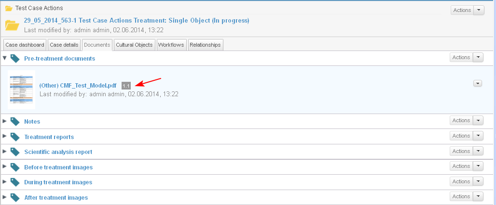

Users with corresponding permissions are able to edit the properties (metadata details) of documents.
- The user starts the action from:
- Personal Dashboard/ My Documents dashlet/ Actions/ Edit Document Details for a selected document
- Case Dashboard/ Documents dashlet/ Actions/Edit Document Details for a selected document
- Case Dashboard/ tab Documents/ Actions/ Edit Document Details for a selected document (1-2-3).
- Document preview/ Actions/ Edit Document Details

- The system opens the screen for editing the metadata details of the document. Depending on the document's definition, the user may edit its details (here): Title File Name, Description (1-2-3).
When the changes are completed, the user clicks the button "Save" (4).

- The system opens the edited document in preview mode. The new metadata details are visualized:
- A new minor version for the document is created (1).
- The edited details appear in the "Properties" section (2)
- In section "Version History" the new version of the document is displayed under "Last Version" with an automatically entered comment "Updated Document attributes" (3)

- The changed version is visible in:
- the Documents dashlet

- in the corresponding section of the case (when the cursor is over the document)
